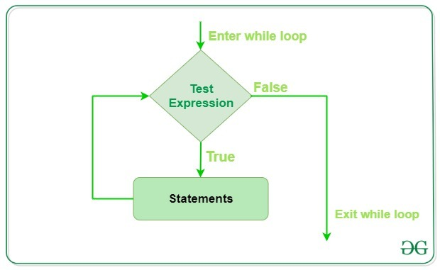

Crash Course in Python Part 2: Flow Control, Loops, Functions, and Generators
Contents
Crash Course in Python Part 2: Flow Control, Loops, Functions, and Generators#
Flow Control#
There comes situations in real life when we need to make some decisions and based on these decisions, we decide what should we do next.
Similar situations arise in programming also where we need to make some decisions and based on these decisions we will execute the next block of code. Decision-making statements in programming languages decide the direction of the flow of program execution.
If statement#
It is used to decide whether a certain statement or block of statements will be executed or not
if condition:
# Statements to execute if
# condition is true
The condition after evaluation will be either true or false
If the statement accepts boolean values – if the value is true then it will execute the block of statements below it otherwise not.
Python uses indentation to identify a block. So the block under an if statement will be identified as shown in the below example:
if condition:
statement1
statement2
# Here if the condition is true, if block
# will consider only statement1 to be inside
# its block.

Example if Statement#
# python program to illustrate If statement
i = 10
if i > 15:
print("10 is less than 15")
print("I am Not in if")
I am Not in if
If-else#
The if statement alone tells us that if a condition is true it will execute a block of statements and if the condition is false it won’t. But what if we want to do something else if the condition is false? Here comes the else statement. We can use the else statement with the if statement to execute a block of code when the condition is false.
if (condition):
# Executes this block if
# condition is true
else:
# Executes this block if
# condition is false

Example of an if-else statement#
i = 20
if i < 15:
print("i is smaller than 15")
print("i'm in if Block")
else:
print("i is greater than 15")
print("i'm in else Block")
print("i'm not in if and not in else Block")
i is greater than 15
i'm in else Block
i'm not in if and not in else Block
If-nested#
If statements can be nested inside other if statements
Example Nested if statements#
i = 10
if i == 10:
# First if statement
if i < 15:
print("i is smaller than 15")
# Nested - if statement
# Will only be executed if statement above
# it is true
if i < 12:
print("i is smaller than 12 too")
else:
print("i is greater than 15")
i is smaller than 15
i is smaller than 12 too
if-elif-else ladder#
It is possible to have a flow of if-else-statements

i = 20
if i == 10:
print("i is 10")
elif i == 15:
print("i is 15")
elif i == 20:
print("i is 20")
else:
print("i is not present")
i is 20
For Loops#
Python For loop is used for sequential traversal i.e. it is used for iterating over an iterable like String, Tuple, List, Set or Dictionary.
for var in iterable:
# statements
Example: Using for Loops in a Python List#
# Python program to illustrate
# Iterating over a list
l = ["Drexel", "is", "Engineering"]
for i in l:
print(i)
Drexel
is
Engineering
Example: Using for Loops in Dictionaries#
# Iterating over dictionary
print("Dictionary Iteration")
d = dict()
d["xyz"] = 123
d["abc"] = 345
for i in d:
print(f"{i} {d[i]}")
Dictionary Iteration
xyz 123
abc 345
Example: Using for Loops in Strings#
# Iterating over a String
print("String Iteration")
s = "Drexel"
for i in s:
print(i)
String Iteration
D
r
e
x
e
l
Loops Controlled with Range#
The
range()function can be used to execute a loop a certain number of times
In-class exercise:#
Use the range function to print the values from 1 to 9
# Python Program to
# show range() basics
# printing a number
for i in range(1, 10):
print(i, end=" ")
1 2 3 4 5 6 7 8 9
In class exercise#
Compute the sum of the numbers from 1-9 using the range() function and a loop
# performing sum of first 10 numbers
sum = 0
for i in range(1, 10):
sum += i
print("\nSum of first 10 numbers :", sum)
Sum of first 10 numbers : 45
Example: Loops with if statements#
# Python program to demonstrate
# for-else loop
for i in range(1, 4):
print(i)
else: # Executed because no break in for
print("No Break")
1
2
3
No Break
Loop Control Statements#
Loop control statements change execution from its normal sequence
When execution leaves a scope, all automatic objects that were created in that scope are destroyed
Continue Statement#
Returns the control to the beginning of the loop
Example: Use of Continue Statement#
# Prints all letters except 'e' and 'g'
for letter in "Drexel Engineering":
if letter == "e" or letter == "g":
continue
print("Current Letter :", letter)
Current Letter : D
Current Letter : r
Current Letter : x
Current Letter : l
Current Letter :
Current Letter : E
Current Letter : n
Current Letter : i
Current Letter : n
Current Letter : r
Current Letter : i
Current Letter : n
Break Statement#
A control statement to bring the process out of the loop
Example use of Break Statement#
for letter in "Drexel Engineering":
# break the loop as soon it sees 'e'
# or 's'
if letter == "e" or letter == "s":
break
print("Current Letter :", letter)
Current Letter : e
Pass Statement#
This is used if there is no code to execute
passis different thancontinueascontinuecauses the loop to restart,passjust the loop.passis usually just used as a future placeholder
Example using Pass Statement#
# An empty loop
for letter in "Drexel Engineering":
pass
print("Last Letter :", letter)
Last Letter : g
Example using Functions#
# Explicit function
def digitSum(n):
dsum = 0
for ele in str(n):
dsum += int(ele)
return dsum
# Initializing list
List = [367, 111, 562, 945, 6726, 873]
# Using the function on odd elements of the list
newList = [digitSum(i) for i in List if i & 1]
# Displaying new list
print(newList)
[16, 3, 18, 18]
While loops#
Python While Loop is used to execute a block of statements repeatedly until a given condition is satisfied. And when the condition becomes false, the line immediately after the loop in the program is executed.

while expression:
statement(s)
Example While Loop#
# Python program to illustrate
# while loop
count = 0
while count < 3:
count = count + 1
print("Hello Drexel Dragon")
Hello Drexel Dragon
Hello Drexel Dragon
Hello Drexel Dragon
Example While Loop with a List#
# checks if list still
# contains any element
a = [1, 2, 3, 4]
while a:
print(a.pop())
4
3
2
1
Example: While Loops with Control Statements#
# Prints all letters except 'e' and ' '
i = 0
a = "Drexel Dragons"
while i < len(a):
if a[i] == "e" or a[i] == " ":
i += 1
continue
print("Current Letter :", a[i])
i += 1
Current Letter : D
Current Letter : r
Current Letter : x
Current Letter : l
Current Letter : D
Current Letter : r
Current Letter : a
Current Letter : g
Current Letter : o
Current Letter : n
Current Letter : s
Example: While Loop with a break statement#
# Breaks the loop as soon as it sees a 'e' and ' '
i = 0
a = "Drexel Dragons"
while i < len(a):
if a[i] == "e" or a[i] == " ":
i += 1
break
print("Current Letter :", a[i])
i += 1
Current Letter : D
Current Letter : r
Example: While Loop with else Statement#
# Python program to demonstrate
# while-else loop
i = 0
while i < 4:
i += 1
print(i)
else: # Executed because no break in for
print("No Break")
1
2
3
4
No Break
i = 0
while i < 4:
i += 1
print(i)
break
else: # Not executed as there is a break
print("No Break")
1
Functions#
An expression that takes some inputs \(\rightarrow\) does something \(\rightarrow\) returns an output

A very simple function#
Let’s make a function that squares a number
def square(x):
y = x**2
return y
Let’s test the function
print(square(10))
100
Let’s make a function that subtracts two values
def subtract(x, y):
z = x - y
return z
print(subtract(10, 5))
5
Importing Modules#
Python contains some basic functions but its power comes from the ability to import, create, share, and co-develop packages
Many modules are available that can be imported into python for use before you write your own code, make sure it does not already exist
If you think someone else might have built what you want … They probably have
Note
** Installing Packages ** It is very easy to install Python packages. Most packages that are well developed are listed on the Python Package Index (PyPI). Most packages can be installed using pip install <package_name>
# Imports a built in package random
import random
# Imports a built in function randrange from package random
from random import randrange
# instantiates a function
prob = random.random()
# prints the output of a function
print(prob)
0.3929984195212458
# two ways to instantiate the same function
diceThrow = random.randrange(1, 7)
diceThrow = randrange(1, 7)
# prints the output
print(diceThrow)
1
Iterators#
An iterator in python is an object that is used to iterate over iterable objects like lists, tuples, dicts, and sets
The iterator object is initialized using the
iter()methodIt uses the
next()method for iterationIterators are used a lot in machine learning
__iter(iterable)__method that is called for the initialization of an iterator. This returns an iterator object__next__method returns the next value for the iterable.
Example of an Iterator#
# Here is an example of a python inbuilt iterator
# value can be anything which can be iterate
iterable_value = "Drexel Dragons"
iterable_obj = iter(iterable_value)
while True:
try:
# Iterate by calling next
item = next(iterable_obj)
print(item)
except StopIteration:
# exception will happen when iteration will over
break
D
r
e
x
e
l
D
r
a
g
o
n
s
Example: Iterating over Different Data Structures#
# Sample built-in iterators
# Iterating over a list
print("List Iteration")
l = ["Drexel", "for", "Engineering"]
for i in l:
print(i)
List Iteration
Drexel
for
Engineering
# Iterating over a tuple (immutable)
print("Tuple Iteration")
t = ("Drexel", "for", "Engineering")
for i in t:
print(i)
Tuple Iteration
Drexel
for
Engineering
# Iterating over a String
print("String Iteration")
s = "Drexel"
for i in s:
print(i)
String Iteration
D
r
e
x
e
l
# Iterating over dictionary
print("Dictionary Iteration")
d = dict()
d["xyz"] = 123
d["abc"] = 345
for i in d:
print("%s %d" % (i, d[i]))
Dictionary Iteration
xyz 123
abc 345
Return and Yield Statements#
Return Statement#
The return statement immediately terminates a function execution and sends the return value back to the caller code
Example: Return Statement#
def return_42(number):
if number == 42:
return 42
print("The number is not 42")
print(return_42(42))
print("Notice that the second print command did not show")
print("\n ")
return_42(24)
42
Notice that the second print command did not show
The number is not 42
Yield Statement#
The
yieldstatement suspends a function’s execution and sends a value back to the caller, but retains enough state to enable the function to resume where it left off
When the function resumes, it continues execution immediately after the last yield run. This allows its code to produce a series of values over time, rather than computing them at once and sending them back like a list
The
yieldstatement is an intrinsic generator
yieldis useful when we want to iterate over a sequence but we do not want to save all the data in memory
Example: Yield Statement in a for loop#
# A Simple Python program to demonstrate working
# of yield
# A generator function that yields 1 for the first time,
# 2 second time and 3 third time
def simpleGeneratorFun():
yield 1
yield 2
yield 3
# Driver code to check above generator function
for value in simpleGeneratorFun():
print(value)
1
2
3
Generators#
A generator-function is defined like a normal function, but whenever it needs to generate a value, it does so with the
yieldkeyword rather thanreturn.If the body of a def contains
yield, the function automatically becomes a generator function.
Example of a Very Simple Generator#
# A generator function that yields 1 for first time,
# 2 second time and 3 third time
def simpleGeneratorFun():
yield 1
yield 2
yield 3
# Driver code to check above generator function
for value in simpleGeneratorFun():
print(value)
1
2
3
Example: A Python program to demonstrate the use of generator object with next()#
# A generator function
def simpleGeneratorFun():
yield 1
yield 2
yield 3
# x is a generator object
x = simpleGeneratorFun()
# Iterating over the generator object using next
print(x.__next__())
print(x.__next__())
print(x.__next__())
1
2
3
In Class Example: A Python program to generate squares from 1 to 100 using yield and therefore generator#
Make a function nextSquare() that uses a while loop to print all of the squares (using yield) that are less than 100.
Try to think about a way to make it the most efficient
def nextSquare():
# Your Code here
next_square = nextSquare()
for i in range(100):
try:
print() # Add the code the calls the iterator
except StopIteration:
break
Cell In [1], line 4
next_square = nextSquare()
^
IndentationError: expected an indented block after function definition on line 1
def nextSquare():
i = 1
# An Infinite loop to generate squares
while True:
if i * i > 100:
break
yield i * i
i += 1 # Next execution resumes
# from this point
next_square = nextSquare()
for i in range(100):
try:
print(next_square.__next__())
except StopIteration:
break
1
4
9
16
25
36
49
64
81
100